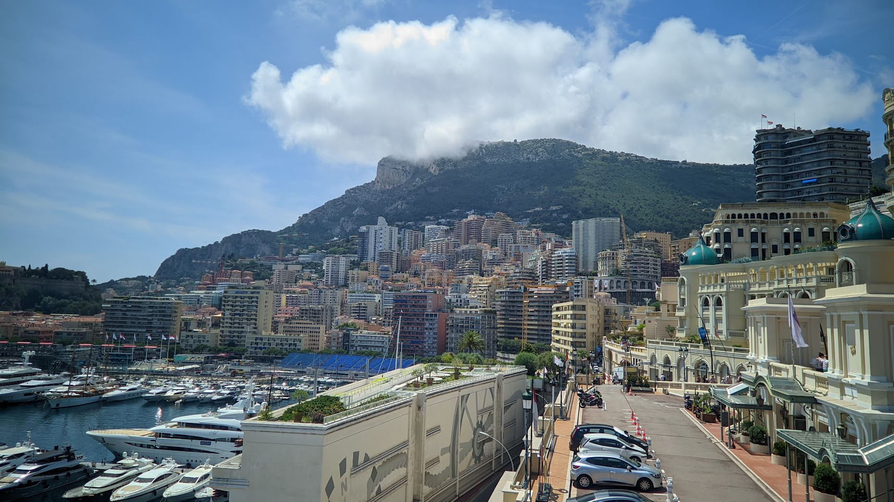

Monaco
-

Monaco was echt een bijzondere stad, net zoals Venetië. Het straalt gewoon luxe uit. Het voelt als een soort paradijs, niet alleen door al die pracht en praal en dat wereldberoemde Monte Carlo Casino, maar ook door het adembenemende landschap met die machtige berg en het superheldere water in de baai. En de stoet van dure auto's en superjachten leek maar niet op te houden. Op een gegeven moment raakten we er bijna aan gewend. Bentley, Bugatti, Rolls Royce, je kunt het zo gek niet bedenken, we hebben ze gezien.
Natuurlijk staat Monaco ook bekend om z'n Formule 1-circuit dat dwars door de stad gaat. Om de stad echt goed te zien, hebben we de route van het circuit gelopen, en je kon zelfs nog de remafdrukken zien op de weg.
Na onze tour door de stad hebben we een plekje gezocht op een terras aan het water bij de superjachten om even af te koelen en alles wat we gezien hadden te laten bezinken. Een lichte nevel werd zelfs over ons gespoten om de hitte wat draaglijker te maken. Hier hebben we een cocktail besteld, en laat mij jullie vertellen, dit was de duurste cocktail die ik ooit heb gedronken!